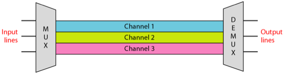
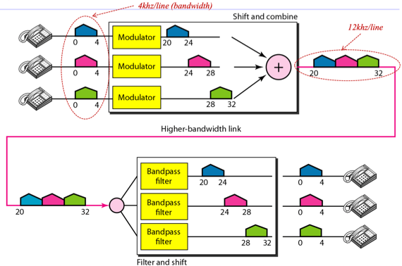
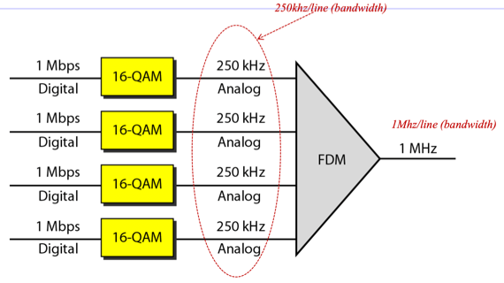
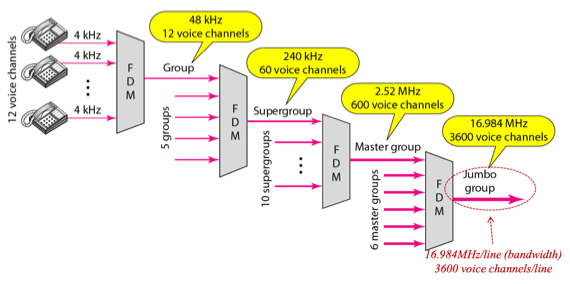
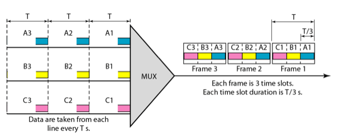
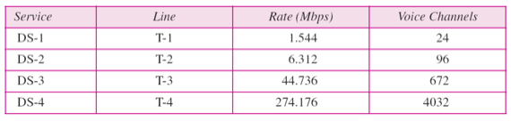
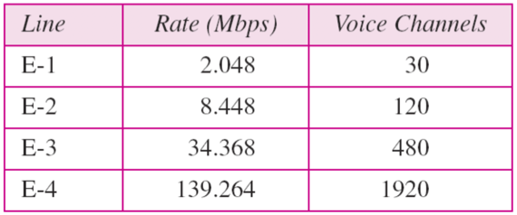
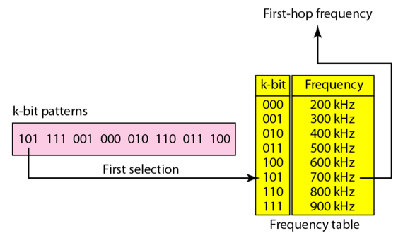
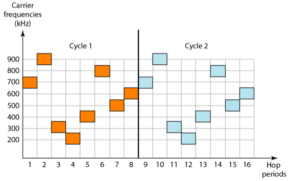
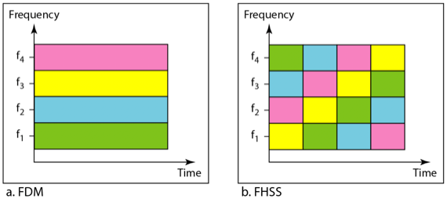

충남대학교 컴퓨터공학과 김상하 교수님의 "데이터 통신" 강의를 필기한 내용입니다.
다소 잘못된 내용과 구어적 표현 이 포함되어 있을 수 있습니다.
Bandwidth Utilization
- 대역폭이 넓을수록 전송속도가 빨라지기 때문에 넓은 대역폭을 현명하게 활용하는 것이 중요하당
- 대역폭을 현명하게 활용하는 방법이 Bandwidth Utilization이며 여기에는 아래의 두가지 방법이 있다
- Multiplexing : 효율성에 조금 더 중점을 둠
- Spreading : 보안에 조금 더 중점을 둠
Multiplexing
- 전송속도가 빠른 전송매개체가 있는데 그정도의 전송속도를 필요로 하지 않는 데이터하나만 주고받는다면 너무 비효율적이다
- 그래서 이러한 데이터들을 여러개를 섞어서 빠른 대역폭의 매개체로 보낸 다음 수신할때 다 분리하는 방법
- 대신 서로 간섭하지 않고 나중에 분리해 낼때 문제가 생기지 않게 합성하는 것이 중요하다
- 이렇게 간섭없이 합성하는 방법에는
- FDM(Frequency-Division Multiplexing) 과
- TDM(Time-Division Multiplexing) 이 있다
Frequency-Division Multiplexing
- Frequency-Division Multiplexing : 얘는 큰 대역폭의 캐리어를 잘게 나눠 작은 대역폭의 신호 여러개를 보내는 방법이다

- 큰 대역폭을 가진 매개체(트렁크라고 부르더라)에서 주파수 범위를 여러개로 쪼갠 다음 나뉘어진 대역폭(각각을 Channel이라고 부른다)에 신호를 하나씩 실어 보내는 방법
- 이 신호들는 하나로 합성되어 전송되지만 수신측에서 주파수 별로 분리하는 필터를 이용해 분리해내면 하나의 채널만 분리해서 수신할 수가 있다 - 이렇게 ::분리하는 것을 Demodulate혹은 Demultiplex라고 한다

- 대역폭이 4인 세 신호를 20-24, 24-28, 28-32의 주파수 범위에 합쳐서 보내면 이 합쳐진 트렁크의 대역폭은 12이므로 더 빠르게 전송할 수 있다. 그리고 이때의 20, 24, 28을 세 신호의 Carrier Frequency라고 부른다. 이 carrier frequecy를 가지로 신호를 분리해 낼 때는 합성신호를 주파수 4씩 세개로 분리한 다음 carrier frequency를 각각 빼주면 원래의 신호가 나오게 되는 것이다

- 크기가 1mb인 데이터를 16-qam으로 변조한다는 것은 하나의 시그널 엘리먼트가 16개의 레벨을 가진다는 뜻으로 결과적으로 하나의 시크널 엘리먼트에 4비트가 담기게 된다. 따라서 이것이 대역폭이 250khz의 신호로 바뀌게 되고 이걸 4개를 합쳐서 1mhz의 트렁크로 보내게 되는 것이다 - 별로 중요한 예시는 아니다
Analog hierarchy

- FDM은 Analog Signal을 전송할떄 주로 사용된다
- 작은 데역폭 신호를 한꺼번에 때려박는게 아니라 몇개씩 모아서 보내게 된다
- 4khz짜리 12개를 모아서 하나의 group이 되고 또 이걸 5개 모아서 supergroup이 되고 이런식으로 작은 대역폭의 신호들을 계층적인 구조로 FDM으로 묶어서 보내는 방식을 취한다
Time-Division Multiplexing

- 대역폭에 따라 bitrate가 달라지므로 대역폭은 시간당 얼마만큼의 데이터를 보낼 수 있는지에 대한 수치가 되기도 한다
- 18p의 예제를 보면 얘네를 따로따로 보내게 되면 단위시간당 하나씩밖에 못 보내게 되지만 이것을 하나의 단위시간에 시간을 분배하여 하나로 합친다음 보내게 되면 같은 단위시간에 3개의 데이터를 보낼 수 있게 된다
- 단위시간당 데이터A를 보낼 수 있는 시간은 한정되어 있는데 그러면 남는시간이 시간이 생기므로 이 시간을 데이터B, 데이터C로 채워서 남는시간을 없애는 거다
- 그니까 기본 원리는 이거다 - Multiplexing 단계에서 작은 대역폭의 신호를 큰 대역폭의 캐리어로 보내면 더 일찍 전송되기 때문에 남는 시간동안 다른 신호를 더 보내게 되는 구조다
- Demultiplexing단계에서는 이것을 다시 시간별로 쪼개서 가져오게 된다
Digital hierarchy
- TDM은 주로 Digital Signal을 전송할때 사용된다
T 회선

- 사람의 목소리인 4000hz는 이것을 8bit로 샘플링을 하면 대략 64khz가 나오게 된단다 이것을 DS-0이라고 한다. 즉, DS-0은 하나의 Voice Channel인 셈
- 얘를 24개를 묶은게 DS-1, 또 묶은게 DS-2 … 이런식으로 계층구조를 가지고 데이터가 전송되게 된다
- 그리고 뭐 얘네들을 보내는 회선(line)을 T-1, T-2 … 뭐 이렇게 이름을 지어놨댄다
- 이 T회선은 미국의 표준이다
E회선

- 하지만 유럽표준은 이거랑은 좀 다르다 → 유럽에서는 T표준이 아닌 E표준을 쓰게 된다
- 유럽은 30개, 120개, 480개 이렇게 묶어서 E-1, E-2, E-3으로 명명해서 사용한다
Spread Spectrum
- 얘는 효율성보다는 정확성에 더 초점을 맞춘다 → 넓은 대역폭에 그냥 작은 대역폭의 데이터 하나를 보낸다
- 이렇게 하는것은더 많은 데이터를 보낸다는 관점에서는 손해이지만,
- 데이터 간의 간섭이 줄어들기 때문에 더 정확하게 보낼 수 있게 된다
- 군사용으로 계발된 보안에 중점을 맞춘 통신법이기 때문에 이런 비효율적인것처럼 보이지만 보안성은 강화된 통신을 하게 되는 것
- 따라서 무선통신같은 간섭신호가 많이 존재하는 환경에서는 이런식으로 Spread Spectrum의 방식을 사용해 데이터를 보내게 된다
Frequency Hopping Spread Spectrum(FHSS)
- 말그대로 주파수(frequency)를 넘나드는방식(hopping)으로 데이터가 전송된다.


- 위의 예시를 보면 데이터가 000이면 100khz대로 보내고, 001이면 200khz대로 보내고 하는 규칙이 테이블에 지정되어 있다
- 따라서 규칙에 따라서 데이터를 전송하는 주파수를 변경하는 것이다 → 즉, 데이터가 전송되는 주파수가 수시로 변경된다
- 주파수가 변경되는 규칙을 알지 못하면 이것을 도청하기 아주 힘들게 된다 따라서 보안성면에서 아주 큰 장점이 있다
- 이것의 단점이라고는 여러 주파수로 변경되면서 전송되기 때문에 적은 대역폭의 신호 일지라도 넓은 대역폭이 필요로 하다는 단점이 있다

- 하지만 이 단점도 보완할 수 있다. 35p의 예제처럼 일반적인 FDM의 경우 왼쪽처럼 여러 신호가 일정한 주파수로 전송되게 되는데 이것을 FHSS의 개념을 합쳐서 오른쪽의 그림처럼 각각의 신호가 규칙에 따라 섞이게 만들어 놓으면 보안성과 효율성 모두를 어느정도 취할 수 있게 된다
Direct Sequence Spread Spectrum(DSSS)
- 오리지날 데이터의 하나의 비트를 정해진 규칙에 따라 여러 비트로 나타내어 보내는 것을 의미한다
- 예를 들면 1의 경우 1010으로 보내고 0의 경우 0101로 보내게 된다
- 원래의 1에 1010을 곱하면 그대로 1010이 나올 것이고, 0을 곱하면 (논리적 곱셈이므로 0곱하기 0은 1이 된다) 0101이 나오게 된다
- 이때의 곱해지는 1010값을 Spreading Code라고 부른다
- 즉, Spreading Code는 하나의 비트를 여러개의 비트로 구성하는 규칙을 말한다
- 수신자도 이미 spreading code를 갖고 있는데 수신된 신호에 spreading code를 곱하면 원래의 데이터를 끄집어낼 수 있다
- 하지만 spreading code를 모르는 사람은 이것을 알아내기 힘드므로 보안수준이 높아지게 된다
- 또한 spreading code는 오류 판별 코드로도 사용될 수 있다 → spreading code를 곱했는데 정확하게 나온다면 정확하게 수신된 것이고, 일부분이 좀 이상하게 나온다면 정확하게 수신이 되지 않은 것이라고 판별하는 용도로도 사용할 수 있다.
- 몇 비트가 잘못 수신되었을때 이런일이 일어나게 된다 - 예를 들어서 +1을 11비트로 보냈는데 2비트가 잘못보내져서 이 두개만 -1로 수신되어도 결국에는 나머지 9개의 비트가 +1이기 때문에 다 더해보면 +7이 되어서 1의 신호로 판단하게 된다
- 즉, 몇 비트가 잘못 수신돼도 더해보면 결국에는 값의 부호가 바뀌지는 않기 때문에 정상적으로 수신된다
- 그리고 이 spreading code를 잘 짜게 되면 FDM도 사용 가능하다 → 으케하는지는 나중에 배운댄다
전송매체
- 전송매체는 단순히 매체일 뿐이고 physical layer는 통신 전반의 계층적 프로토콜을 말하는 것으로 이 두개는 같지 않다
- guided media : 가이드가 있다 = 유선통신을 말함
- unguided media : 가이드가 없다 = 무선통신을 말함
Guided media
- Twisted pair cable, coaxial cable, fiber optic cable 이 세가지 종류가 있다
Twisted pair cable
- 송신용도의 선, 수신용도의 선 이렇게 두가지의 선을 꼬아놓은 형태이다 인터넷선
- 꼬아놓은 이유는 도선에 의한 자연발생적인 인덕턴스(기억안나면 전자회로 강의 참고)를 막기 위함 → 이렇게 꼬아놓으면 인덕턴스가 상쇄되어 더 효율적이랜다
- **UTP(Unshielded Twisted Pair)**선 : 그냥 두 선을 플라스틱 커버를 이용해 묶어놓은 것
- **STP(Shielded Twisted Pair)**두 선을 금속소재의 커버로 덮고 그 다음에 플라스틱 커버를 씌운 것 → 이렇게 하는 이유는 이 금속커버가 피뢰침의 역할을 해서 외부의 간섭을 줄이게 된다 → 하지만 비싸기 때문에 보통 우리가 utp케이블을 쓴댄다
- 10p에 보면 utp의 종류들이 나와있다 → 얼마나 촘촘하게 꼬았는지에 따라서 속도가 달라지고 이걸 가지고 카테고리를 나눈 것 이다
Coaxial cable
- 얘는 수신용도의 도선밖에 없다 - 이 도선을 절연체와 금속 쉴드로 감은 케이블이다 유선 tv케이블
Fiber-optic cable
- 뭔지알제? 매질의 밀도차이에 따라 특정 각도에 따라서는 빛이 반사된다는 성질을 이용한 광섬유케이블이다
- multimode : 빛이 반사되며 진행되는 구조
- step index : 빛이 경계면에서 각지게 반사되는 구조
- graded index : 빛이 다초점 반사되어 각지게 반사되는게 아닌 둥글게 휘어서 반사되는 구조
- singlemode : core의 지름을 좁혀서 빛의 직진성만 이용하는 구조
Unguided media
- radio wave, microwave, infrared(적외선)의 종류가 있다
- ground propagation : 지면을 따라 진행되는 형태(~2MHz)
- sky propagation : 전리층에 반사되어 진행되는 형태(~30MHz)
- Line-of-sight propagation : 공기중으로 직접 전달되는 형(300MHz~)
- 21p에 주파수에 따은 propagation이 정리되어있음
- 주파수가 클수록 우리가 다루기 어렵다
Radio wave
- Omnidirectional : 방향성 없이 구형으로 퍼져나가는 성질
- 라디오 등에 사용한댄다
Microwave
- Unidirectional : 직진성이 강하다는 성질
- 위성네트워크 등에 사용한댄다
Infrared
- 직진성이 더 강하다
- tv리모컨 등에 쓰인다 → tv리모컨의 방향이 잘 안맞으면 작동 안하는게 다 이 강한 직진성때문이다